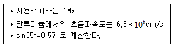
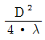
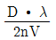
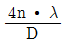
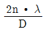
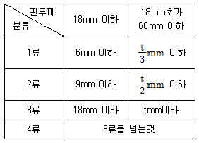

초음파비파괴검사기능사 (2007-01-28 기출문제)
1과목: 초음파탐상시험법
1. 다른 비파괴검사법과 비교하였을 때 침투탐상시험의 단점에 대한 설명으로 옳은 것은?
- 비금속 표면에 사용할 수 없다.
- 금속내부 결함에 사용할 수 없다.
- 크기가 큰 제품에는 사용할 수 없다
- 원자번호가 큰 금속의 표면에는 사용할 수 없다.
(정답률: 91%)

2. 다음 중 1초당 2.5× 10사이클과 같은 것은?
- 25㎑
- 250㎑
- 25㎒
- 25μ㎐
(정답률: 70%)
3. 다음과 같은 조건으로 알루미늄 검사체를 수직탐상할 때 초음파빔의 분산각을 35°로 하면 탐촉자 직경은 최대 약 몇㎜로 해야하는가?

- 11.4
- 13.4
- 25.2
- 27.7
(정답률: 19%)
4. 초음파탐상검사에 사용되는 탐촉자의 분해능에 대한 설명으로 옳은 것은?
- 탐촉자의 직경에 비례한다.
- 대역 폭(band width)에 비례한다.
- 펄스(pulse)의 폭에 비례한다.
- 탐촉자의 두께에 비례한다.
(정답률: 37%)
5. 초음파 탐상기에서 단위 시간에 발생하는 펄스의 수를 무엇이라하는가?
- 펄스의 길이
- 펄스 회복시간
- 공명주파수
- 펄스 반복주파수
(정답률: 91%)
6. A-주사 기본표시에서 가로(횡)축은 무엇을 나타내는가?
- 에코의 높이
- 탐촉자를 움직인 거리
- 반사체의 크기
- 경과시간
(정답률: 47%)
7. 공업용 초음파탐상시험에서의 실용적인 초음파 범위는?
- 50㎐ ~ 10㎑
- 500㎑ ~ 10㎒
- 5㎒ ~50㎒
- 50㎒ 이상
(정답률: 알수없음)
8. 초음파탐상시험시 탐촉자에 음향렌즈를 부착시키면 어떤 결과가 나타나는가?
- 감도와 분해능은 높아지나 침투력은 작아진다.
- 감도와 침투력은 커지나 분해능이 나빠진다.
- 침투력은 커지나 감도와 분해능이 저하한다.
- 침투력과 분해능은 커지나 감도는 나빠진다.
(정답률: 60%)
9. 근거리음장 한계거리 (X0)에 대한 식으로 올바른 것은? (단, D : 원형진동자의 지름, λ : 시험체 내에서의 파장, ν : 시험체 내에서의 파의 속도, ｎ : 진동수 )




(정답률: 60%)
10. 초음파탐상 시험방법 중 직접 접촉법에 대한 설명으로 옳은 것은?
- 빔의 투과력을 감소시킨다.
- 휴대성이 좋지 않다.
- 균일한 음향전달이 어렵다.
- 고주파수 탐상으로 국한되어 있다.
(정답률: 알수없음)
11. CRT(또는 LCD) 표시기에 나타난 탐상면 에코와 저면반사 에코 사이의 거리를 다음 중 무엇이라 하는가?
- 펄스 진폭
- 탐촉자가 움직인 거리
- 불연속의 두께
- 시편의 두께
(정답률: 알수없음)
12. 초음파 경사각탐상시 직사법으로 할 때 결함까지의 깊이를 구하는 식은? (단, 굴절각은 θ로 한다.)
- 빔 진행거리 × cotθ
- 빔 진행거리 × sinθ
- 빔 진행거리 × tanθ
- 빔 진행거리 × cosθ
(정답률: 알수없음)
13. 수침법에서 탐촉자가 평평한 입사표면에 대해 수직임을 증명할 수 있는 것은?
- 입사표면으로부터의 최대 반사
- 다중 송신하는 물의 제거
- 적절한 파장
- 초기 펄스의 최대 진폭
(정답률: 알수없음)
14. 다음 중 바퀴형(wheel) 탐촉자로 탐상할 수 없는 초음파탐상 시험방법은?
- 수직 탐상
- 경사각 탐상
- 표면파 탐상
- 쉐도우 탐상
(정답률: 55%)
15. 공진법에서는 어떤 형태의 초음파를 주로 사용하는가?
- 연속파
- 펄스파
- 표면파
- 레일리파
(정답률: 알수없음)
16. 다음 중 초음파탐상 검사시 많은 수의 작은 지시들(임상 에코)을 나타내는 결함은?
- 수축관 (shrinkage cavity
- 큰 비금속개재물 (Inclusion)
- 다공성 기포(porosity)
- 균열 (crack)
(정답률: 85%)
17. eV(electron volt)란 단위의 의미는?
- 1V 전위차가 있는 전자가 받는 에너지의 단위
- 물질파 파장의 단위
- Lorentz 힘의 크기의 단위
- 원자질량 단위로서 정지하고 있는 전자 1개의질량
(정답률: 89%)
18. 비파괴검사법 중 체적검사를 할 수 있는 것은?
- 자분탐상검사
- 침투탐상검사
- 방사선투과검사
- 육안검사
(정답률: 47%)
19. 다음 중 주로 액체 내에만 존재할 수 있는 파는?
- 표면파
- 종파
- 횡파
- 판파
(정답률: 50%)
20. 초음파탐상시험에서 펄스폭과 분해능과의 관계를 바르게 설명한 것은?
- 펄스폭과 분해능은 같은 의미이다.
- 펄스폭이 작을수록 분해능이 좋아진다.
- 펄스폭이 클수록 분해능이 좋아진다.
- 펄스폭과 관계없이 분해능은 항상 일정하다.
(정답률: 42%)
2과목: 초음파탐상관련규격
21. 수침법에서 20㎜의 물거리는 강재 두께가 몇㎜일 때 저면에코가 스크린 화면상에서 같은 위치에 나타나는가? (단, 강재의 음속은 5900㎧, 물에서의 음속은 1475㎧ 이다.)
- 20㎜
- 40㎜
- 60㎜
- 80㎜
(정답률: 알수없음)
22. 비파괴검사로 접착상태 검사(bonded joint test)를 실시하고자 할 때 다음 설명 중 틀린 것은?
- 금속과 금속 접착에 이용된다.
- 금속과 비금속 접착에 이용된다.
- 다중 반사법을 사용한다.
- 초음파탐상검사로는 측정할 수 없다.
(정답률: 알수없음)
23. 초음파 탐상기의 화면에 2개의 에코 A,B가 있다. 이 때 A,B 에코의 높이의 비가 10배 차이가 난다면 이를 ㏈로 환산하면 몇㏈ 차이가 나는가?
- 10
- 20
- 100
- 200
(정답률: 알수없음)
24. 두께가 두꺼운 강판 용접부에 존재하는 결함을 검출하기 위한 가장 효과적인 초음파탐상 시험 방법은?
- 횡파를 이용한 경사각 탐상법
- 종파를 이용한 수직 탐상법
- 판파를 이용한 경사각법
- 표면파를 이용한 수직 탐상법
(정답률: 60%)
25. 초음파가 물에서 알루미늄판으로 12˚의 입사각으로 입사하면 알루미늄판 내에서의 굴절각 sinθ 값은? (단, 물 속에서 음파의 속도는 1500㎧, 알루미늄판 내에서 횡파 속도는 3000㎧, sin12˚=0.2 로 계산하도록 한다.)
- 0.1
- 0.2
- 0.3
- 0.4
(정답률: 42%)
26. 강용접부의 초음파탐상 시험방법(KS B 0896)으로 탐상할 때 에코높이 구분선을 작성하는 경우 구분선 H선과 L선의 ㏈차이는 얼마로 하는가?
- 6
- 12
- 15
- 18
(정답률: 90%)
27. 비파괴시험 용어(KS B ⑤50)에서 초음파탐상시험에 대한 설명이 틀린 것은?
- 초음파란 200㎑ 이상인 음파를 말한다.
- 송신펄스란 초음파 펄스를 발생하기 위해 탐촉자의 진동자에 인가하는 전기 펄스를 말한다.
- 펄스란 아주 짧은 시간 동안만 계속되는 신호를 말한다.
- 에코란 시험체의 흠집ㆍ바닥면ㆍ경계면 등에서 반사되어 수신된 펄스 및 그것이 탐상기의 표시기에 나타낸 지시를 말한다.
(정답률: 77%)
28. 금속재료의 펄스반사법에 따른 초음파탐상 시험방법 통칙(KS B 0817)에 규정한 시험 방법에 대한 설명이 틀린 것은?
- 접촉매질은 각종 액체, 풀 상태, 겔 상태인 것을 쓴다.
- 리젝션은 원칙적으로 사용하지 않는다.
- 감도의 조정 방법으로 시험편방식을 사용할 수 있다.
- 펄스 반복주파수는 가능한 한 높게 설정하여야 한다.
(정답률: 알수없음)
29. 초음파탐상 시험용 표준시험편(KS B 0831)에서 STB-G계열의 시험편인 V2, V3, V5, V8, V15-1, V15-1.4, V15-2, V15-2.8, V15-4 및 V15-5.6 중에서 인공 흠의 직경이 2㎜인 시험편은 몇 개 인가?
- 1
- 3
- 4
- 5
(정답률: 알수없음)
30. 강용접부의 초음파탐상 시험방법(KS B 0896)에서 규정한 초음파 탐상기에 필요한 성능을 설명한 것 중 옳은 것은?
- 증폭 직선성은 이론값과 측정값의 편차가 ±3%의 범 내로 한다.
- 시간축의 직선성은 오차가 ±2%의 범위 내로 한다.
- 수직탐상의 감도 여유값은 20㏈ 이상으로 한다.
- DAC회로가 내장된 탐상기의 경사값의 조정은 0.48~4.8㏈/㎜ (횡파)의 범위에서 할 수 있는 것으로 한다.
(정답률: 알수없음)
31. 초음파탐상시험용 표준시험편(KS B 0831)에 의한 A1형 STB 시험편의 검정에 사용하는 탐촉자의 주파수는?
- 1㎒
- 2.25㎒
- 5㎒
- 10㎒
(정답률: 59%)
32. 강용접부의 초음파탐상 시험방법(KS B 0896)에서 사용하는 경사각탐촉자에 대한 성능점검으로, 작업개시 및 작업시간 8시간 이내마다 점검해야 할 사항은?
- 빔 중심축의 치우침
- A1, A2 감도
- 원거리 분해능
- 불감대
(정답률: 알수없음)
33. 초음파 탐촉자의 성능 측정방법(KS B ⑤35)에 규정된 탐촉자의 표시가 “B3M10×10A45AL" 일 때 맨 앞 B의 의미는?
- 광대역의 의미인 주파수 대역폭
- 압전 소자 일반의 진동자 재료
- 수직탐촉자를 의미하는 형식
- 단위가 “도”로 표시되는 굴절각
(정답률: 알수없음)
34. 강용접부의 초음파탐상 시험방법(KS B 0896)에 따른 시험결과의 분류 방법에 대한 설명으로 틀린 것은?
- 경사평행주사로 검출된 흠의 결과의 분류는 기존 분류에 한 급 하위분류를 채용한다.
- 동일 깊이에 있어서 흠과 흠의 간격이 큰 쪽의 흠의 지시 길이보다 짧은 경우는 동일 흠군으로 본다.
- 흠과 흠의 간격이 양자의 흠의 지시길이 중 큰 쪽의 흠의 지시길이 보다 긴 경우는 각각 독립한 흠으로 본다.
- 분기주사 및 용접선 위 주사에 의한 시험 결과의 분류는 당사자 사이의 협정에 따른다.
(정답률: 알수없음)
35. 강용접부의 초음파탐상 시험방법(KS B 0896)에 규정된 경사각 탐촉자의 공칭주파수가 2㎒ 와 5㎒ 일 때 사용되는 진동자의 공칭치수(㎜)로 틀린 것은?
- 2㎒ : 20×20
- 5㎒ : 25×25
- 2㎒ : 14×14
- 5㎒ : 10×10
(정답률: 55%)
36. 초음파탐상시험용 표준시험편 (KS B 0831)에 의한 N1형 STB 시험편에 검정용으로 사용되는 탐촉자는?
- 5㎒ 수침 탐촉자
- 굴절각 70˚ 경사각 탐촉자
- 굴절각 45˚ 경사각 탐촉자
- 2㎒ 수직 탐촉자
(정답률: 알수없음)
37. 초음파 탐촉자의 성능 측정방법(KS B ⑤35)에서 규정한 탐촉자 기호 “N5Q20N"에서 "20N" 의 설명으로 올바른 것은?
- 진동자의 지름이 20㎜인 직접 접촉용 수직탐촉자
- 진동자의 지름이 20㎜인 직접 접촉용 경사각탐촉자
- 넓은 주파수 대역으로 공칭주파수가 20㎒
- 공칭주파수가 20㎒인 직접 접촉용 수직탐촉자
(정답률: 알수없음)
38. 강용접부의 초음파탐상 시험방법(KS B 0896)에 따라 모재두께가 각각 22㎜, 15㎜ 인 맞대기 용접부를 탐상한 결과 흠의 최대에 코 높이가 제Ⅲ영역에 해당 하고 흠의 길이는 10㎜인 것으로 측정되었다. 이 흠을 Ⅲ영역의 일부인 다음 표를 이용하여 분류하였을때 올바른 것은?

- 1류
- 2류
- 3류
- 4류
(정답률: 알수없음)
39. 강용접부의 초음파탐상 시험방법(KS B 0896)에 따라 판 두께가 25㎜ 인 시험체를 수직탐상을 할 경우 흠의 지시 길이를 구하는 방법의 설명으로 맞는 것은?
- 최대 에코높이가 나타나는 위치를 중심으로 그 주위를 주사하여 에코높이가 L선을 넘는 탐촉자 이동거리(긴 지름)로부터 구한다.
- 최소 에코높이가 나타나는 위치를 중심으로 그 주위를 주사 하여 에코높이가 M선을 넘는 탐촉자 이동거리(긴 지름)로부터 구한다.
- 최대 에코높이가 나타나는 위치를 중심으로 그 주위를 주사하여 에코높이가 최대 에코높이의 ½(-6㏈)을 넘는 탐촉자 이동거리(긴지름)로부터 구한다.
- 최소 에코높이가 나타나는 위치를 중심으로 그 주위를 주사하여 에코높이가 최대 에코높이의 ¼(-12㏈)을 넘는 탐촉자 이동거리(긴 지름)로부터 구한다.
(정답률: 알수없음)
40. 알루미늄의 맞대기용접부의 초음파경사각탐상 시험방법(KS B 0897)에 따른 1탐촉자법에서 흠이 발견되어 최대에코가 지정된 평가레벨을 초과했을 때 다음 중 A 종으로 판정할 수 있는 것은?
- “기준레벨 - 12㏈” 을 넘는 것
- “기준레벨 - 18㏈” 을 넘는 것
- “기준레벨 - 24㏈” 을 넘는 것
- “기준레벨 - 30㏈” 을 넘는 것
(정답률: 82%)
3과목: 금속재료일반 및 용접일반
41. 내부 네트워크에 대한 외부로부터의 불법적인 접근을 방어 보호하는 장치로 외부의 접근을 체계적으로 차단하는 것을 무엇이라하는가?
- 해킹
- 펌웨어
- 스토킹
- 방화벽
(정답률: 36%)
42. 새로운 전자메일이 왔을 경우에 조회할 수 있는 기능을 가진 프로토콜로서, 메일 서버 컴퓨터에 설치되어 있는 윈도우즈용 메일 프로그램을 이용해 메일을 주고 받을 때 사용하는 프로토 콜은?
- TCP/IP
- SMTP
- IMAP
- POP
(정답률: 0%)
43. 한 대의 컴퓨터에서 동시에 여러 작업을 수행하는 것은?
- 로그인 (Log-in)
- 멀티미디어 (Multimedia)
- 멀티태스킹 (Multi-tasking)
- 플러그 앤 플레이 (Plug and Play)
(정답률: 알수없음)
44. 우리 정부의 “교육인적자원부” 인터넷 주소로 맞는 것은?
- http://www.moe.go.kr
- http://www.moe.co.kr
- http://www.moe.ac.kr
- http://www.mod.re.kr
(정답률: 알수없음)
45. 인터넷에서 특정한 웹사이트에 접속했던 기록을 보관하고 있는 것은?
- CGI
- Cookie
- GPS
- Ping
(정답률: 알수없음)
46. 상온에서 체심입방격자에 해당되는 금속은?
- Zn
- Pt
- Ag
- Mo
(정답률: 알수없음)
47. 섬유강화금속 복합재료의 표기로 옳은 것은?
- FRM
- CVD
- PVD
- NKS 4
(정답률: 알수없음)
48. 다음 중 황동의 주성분으로 옳은 것은?
- Cu - Sn
- Sn - Ni
- Cu - Zn
- Zn - Sn 4
(정답률: 47%)
49. 알루미늄 합금의 질별 기호 중 의 설명으로 옳은 것은?
- 담금질 후 냉간 가공한 것
- 담금질 후 인공시효 시킨 것
- 담금질 후 상온시효 시킨 것
- 담금질 후 안정화 처리한 것
(정답률: 50%)
50. Al 의 표면을 적당한 전해액 중에서 양극 산화 처리하여 방식성이 우수하고 치밀한 산화 피막을 만드는 방법이 아닌 것은?
- 수산법
- 황산법
- 질산법
- 크롬산법
(정답률: 40%)
51. 다음 중 금속의 일반적인 특성이 아닌 것은?
- 전성 및 연성이 나쁘다.
- 전기 및 열의 양도체이다.
- 금속 고유의 광택을 가진다.
- 수은을 제외한 고체 상태에서 결정구조를 가진다.
(정답률: 알수없음)
52. 냉간 가공한 금속재료를 가열하여 풀림 하였을 때 냉간가공으로 인하여 일어난 결정입자의 내부 변형이 없어지는 과정은?
- 재결정
- 회복
- 결정립성장
- 2차 재결정
(정답률: 55%)
53. 다음 중 경도시험기가 아닌 것은?
- 만능시험기
- 브리넬시험기
- 로크웰시험기
- 비커스시험기
(정답률: 알수없음)
54. 물과 얼음, 수증기가 평형을 이루는 3 중점 상태에서의 자유도는?
- 0
- 1
- 2
- 3
(정답률: 알수없음)
55. 주철의 일반적인 특징을 설명한 것 중 틀린 것은?
- 절삭성이 좋은 편이다.
- 진동의 감쇠능이 우수하다.
- 유동성이 좋아 주조가 잘 된다.
- 충격에 잘 견디어 깨지지 않는다.
(정답률: 34%)
56. 다음 중 산화가 가장 빨리 일어나는 금속은?
- Cu
- Fe
- Ni
- Al
(정답률: 알수없음)
57. 다음 중 Ni 합금이 아닌 것은?
- 슈퍼인바
- 문쯔메탈
- 엘린바
- 플래티나이트
(정답률: 73%)
58. 피복 아크 용접봉의 피복제 역할 설명 중 잘못된 것은?
- 전기 전도를 양호하게 한다.
- 파형이 고운 비드를 만든다.
- 급냉을 방지한다.
- 스패터를 적게 한다.
(정답률: 알수없음)
59. 다음 중 전기저항 용접이 아닌 것은?
- 스폿 용접
- 서브머지드 용접
- 심 용접
- 프로젝션 용접
(정답률: 알수없음)
60. 용접조건 중 용입 불량의 원인이 아닌 것은?
- 루트 간격이 넓을 때
- 용접 홈 각도가 좁을 때
- 용접속도가 너무 빠를 때
- 용접 전류가 낮을 때
(정답률: 34%)